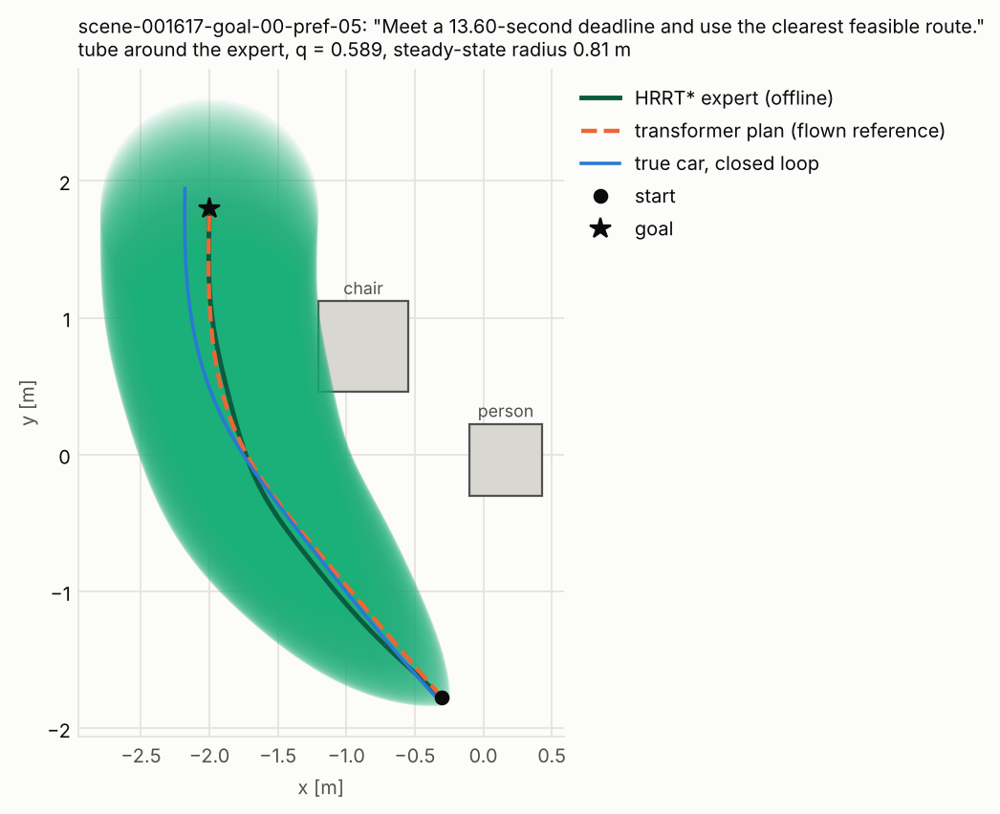
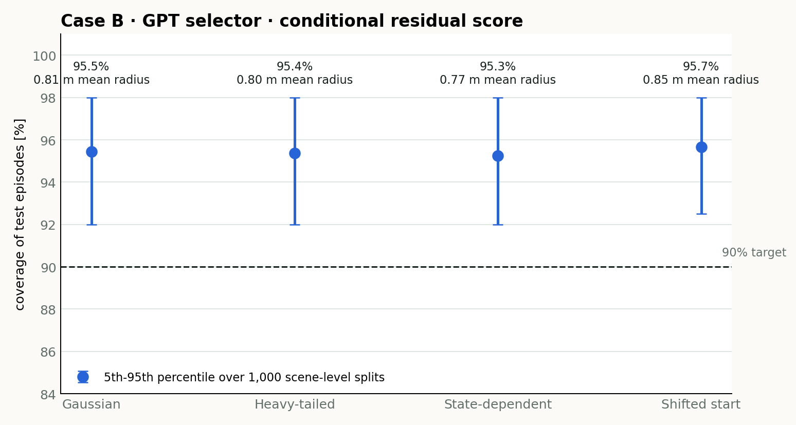
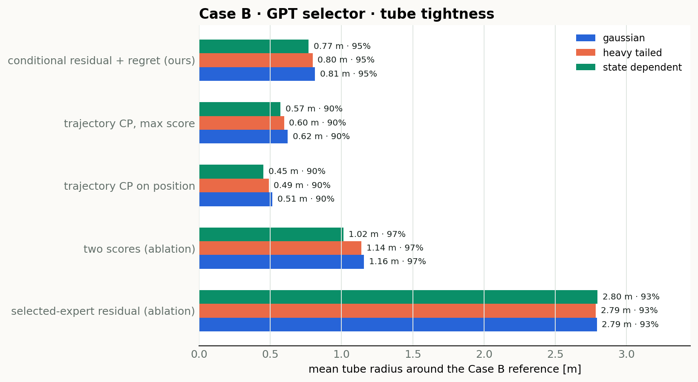
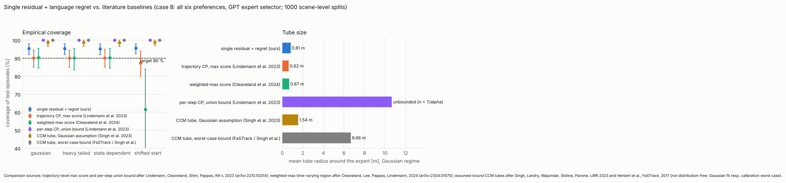
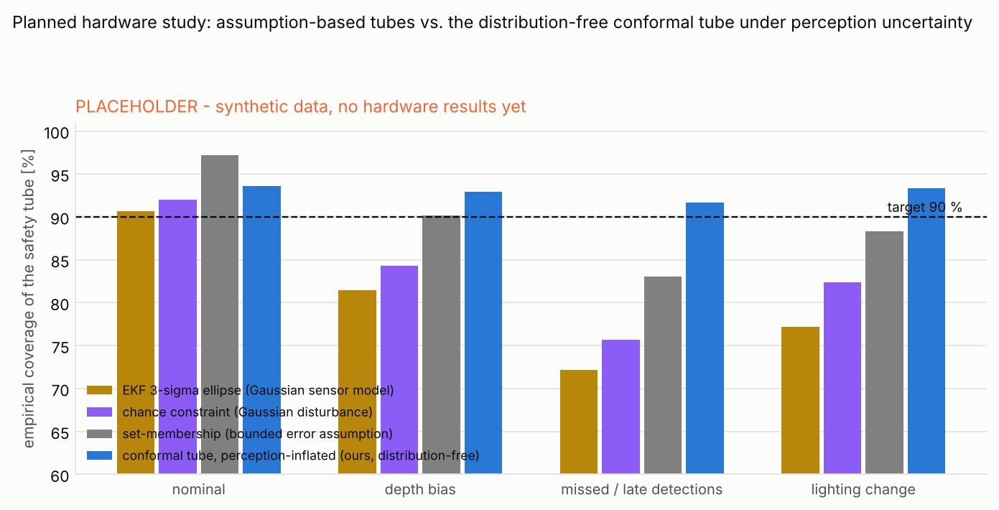

Language-conditioned autonomy · Contraction control · Conformal prediction
Probabilistically Robust and Safe Tracking of Language-Conditioned Natural-Language Tasks
A structured waypoint Transformer, an offline HRRT* language expert, and one calibrated residual score connect what the user asked for to the path the vehicle actually flies.
Transformer plan
HRRT* expert
Flown state
Certified tube
What is certified
Abstract
A Transformer plans waypoints from a structured scene, a goal sentence L₁, and a route preference L₂. The vehicle flies the Transformer plan under a contracting controller that feeds back only the measured state. Offline, HRRT* with a GPT route selector supplies the language-conditioned trajectory the vehicle should have followed.
The finalized certificate bounds the Riemannian distance from that Case B reference to the flown state using a single conditional residual score. It assumes no disturbance, tracking-error, or planner-error model. Across all six preference types and 2,598 held-out rows, the tube covers 95.3–95.5% of test episodes under Gaussian, heavy-tailed, and state-dependent disturbances against a 90% target, with a mean position radius of 0.77–0.81 m. Under a shifted start distribution, coverage remains 95.7%.
Animated framework
From language to a certified flight tube
1 / 5
Dataset provenance
Expert generation and human auditing
Generate candidates, then audit the language choice
For each scene, HRRT* produces a family of collision-free routes spanning homotopy classes and clearance levels. The GPT teacher reads the route cards and selects the route that best satisfies L₂. Human review checks the semantic choice before the trajectory enters the imitation dataset.
Execute the grounded mission
L₁ grounds the goal relative to the scene. L₂ controls the route semantics. The online stack converts the selected task into Transformer waypoints and then a smooth reference trajectory.
Case B · conditional score · GPT selector only
Simulation benchmark
Gaussian95.5%0.81 m mean radius
Heavy-tailed95.4%0.80 m mean radius
State-dependent95.3%0.77 m mean radius
Shifted start95.7%0.85 m mean radius
Seed-split quantileq = 0.589
Calibration rank181 / 200
Steady-state radius0.81 m
Language regret weightβ = 2





Interpretation. These values certify marginal coverage over exchangeable scenes, preferences, and disturbance draws from the calibration distribution for the simulated 4D car. They are not hardware coverage measurements.
Perception-aware calibration
Hardware implementation with environmental uncertainty
Preserve exchangeability before calibration
Split conformal prediction requires exchangeable calibration and test episodes. Dropping missed detections after data collection would condition the sample and break that design. The workspace is therefore restricted in advance to regions where the perception stack achieved complete detection in the characterization run.
gray candidate points → green finalized detectable region
Training and calibration draws
Goals and obstacles are ablated across the finalized green region. Synthetic scenes generate training examples. Calibration episodes draw from the same declared workspace while the perceived obstacle footprint comes from the physical perception pipeline; misses remain recorded as misses.
fixed detectable region→synthetic training scenes→physical calibration captures

Ideal double-integrator expert
p̈d = ud
The hardware formulation compares the Transformer trajectory with the language-conditioned expert under the declared workspace distribution.
Conformal contraction to the expert
Pr[‖p̂d(t) − pd(t)‖ ≤ rCP(t), ∀t] ≥ 1 − α
The certificate belongs to the calibrated Transformer-to-expert residual and the stated perception domain.
Tracking assumption
PX4 cascaded PID · high-rate inner loop
The current hardware study assumes ideal tracking between the Transformer reference and the vehicle. That assumption must be validated separately before interpreting the tube as end-to-end hardware safety.

Primary sources
References and reproducibility
Project reportConformal contraction tubes around a language-conditioned expertFormulation, Case B certificate, and simulation benchmark
Trajectory conformal predictionLindemann et al., 2023Safe planning in dynamic environments using conformal prediction
Weighted time-series regionsCleaveland et al., 2024Conformal prediction regions for time series
Contraction tubesSingh et al., 2023Robust feedback motion planning via contraction theory
Reachability baselineHerbert et al., 2017FaSTrack: fast and guaranteed safe tracking
Machine-readable evidenceCase B / GPT benchmark exportMetrics, certificate, conditions, and evidence scope used by this page